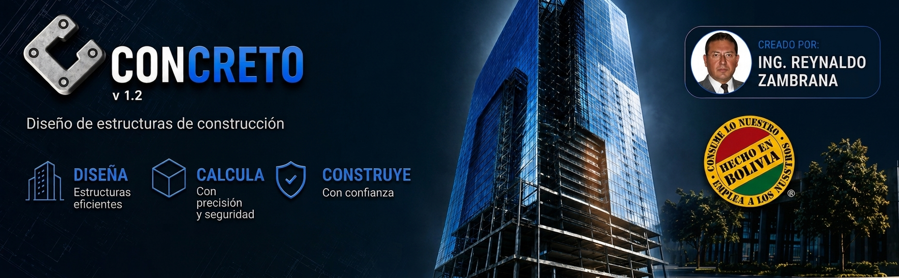
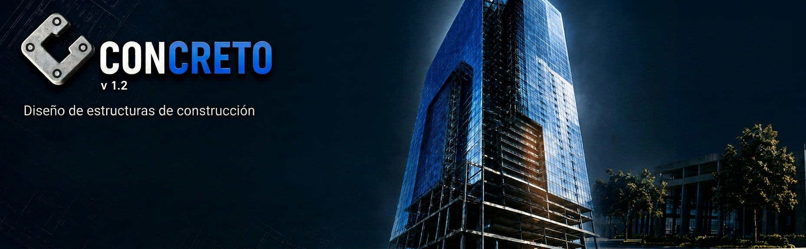
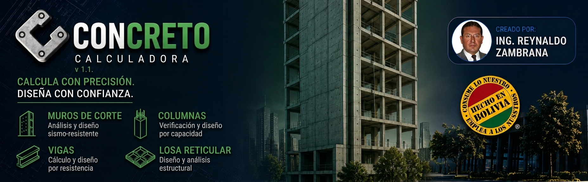
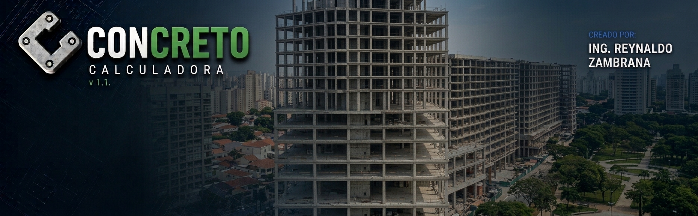
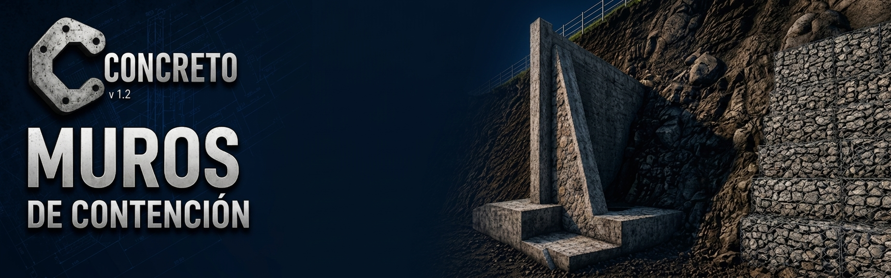

GUÍA · PRÓXIMAMENTE
Guías de predimensionamiento
Material de consulta para las primeras decisiones de un proyecto estructural.
Tres aplicaciones Android para predimensionar edificios, verificar elementos individuales y calcular muros de contención — con memoria de cálculo y diagramas acotados exportables en PDF, directamente desde el sitio de obra.
CONCRETO acerca el criterio de cálculo estructural al celular sin desconectarlo de la norma, la revisión técnica y las decisiones reales de obra.
Desarrolladas junto a ingenieros estructurales bolivianos y verificadas contra las normas ACI 318 / CBH.
Pensada para la primera etapa del diseño: llevar cargas de piso a piso y obtener secciones preliminares de losa, columna y zapata en minutos, con la misma metodología con la que se validó cada fórmula contra planillas de cálculo de referencia.


TUTORIAL DESTACADO · TIKTOKVer demo completa de PrediseñoGuía de uso de la app con un ejemplo práctico→Cuando ya tienes la sección que quieres verificar, esta app te lleva de los datos al plano acotado: viga, columna, losa casetonada o muro de corte, cada uno con su propio diagrama a escala.


TUTORIAL DESTACADO · TIKTOKVer demo de la CalculadoraLosa casetonada, fundación y refuerzo en segundos→Calcula y verifica un muro de contención completo: empuje de tierra, peso propio, volteo, deslizamiento y tensiones sobre el suelo, con los mismos factores de seguridad que verías en un informe de gabinete.

TUTORIAL DESTACADO · TIKTOKVer demo de Muro de ContenciónUso de la app con ejemplo práctico→Cada fórmula fue revisada celda por celda contra planillas de cálculo y firmada por ingenieros estructurales que las usan en obra.
Una biblioteca seleccionada de guías, memorias, hojas de consulta y documentos técnicos. Los recursos se publicarán aquí sin hacer pesada la página.
Material de consulta para las primeras decisiones de un proyecto estructural.
Referencias de presentación para tus reportes de vigas, columnas y muros.
Enlaces de referencia para consultar criterios y documentación aplicable.
Plantillas y formatos que complementarán el flujo de cálculo de las apps.
¿Buscas un recurso específico? Escríbenos y te avisaremos cuando esté publicado.
Tutoriales breves de las aplicaciones, respuestas rápidas y explicaciones técnicas en profundidad. Los videos externos se cargan únicamente cuando decides abrirlos.
Una introducción breve al enfoque de cálculo, visualización y exportación de reportes desde el celular.
Tengo una consulta →Conoce cada aplicación con una demostración directa.
Una biblioteca independiente de videos largos sobre cubiertas, vigas, muros de contención, modelación y criterios de cálculo. Cada portada abre el video completo en YouTube.
No hay pasarela de pago automática: la licencia se activa manualmente para tu celular. Tú nos envías una foto del código que genera la app y activamos ese dispositivo desde nuestro sistema.